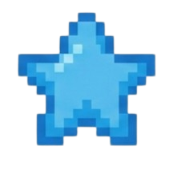

O que é Tamagotchi?
Um Tamagotchi (frequentemente chamado de "bichinho virtual") é um clássico brinquedo eletrônico
portátil lançado originalmente no Japão em 1996. Ele simula a criação de um animal de estimação digital,
onde o dono precisa alimentá-lo, limpá-lo, dar remédio quando adoecer e brincar com ele.O nome é uma
junção de "tamago" (que significa "ovo" em japonês) e "watch" (relógio)

Quem sou eu?
Meu nome é Joyce, trabalho na área de desenvolvimento de sistemas a 1 ano e meio, mas sou mais
focada no desenvolvimento front-end, especificamente com HTML/CSS puro e React. Sou apaixonada
por cultura asiática, gastronomia, jogos indie e artes manuais.
Por que eu escolhi o Tamagotchi?
Eu escolhi desenvolver um mini Tamagotchi online após a sugestão de um amigo,
eu queria desenvolver algo diferente e divertido para a atividade, que não apenas
trouxesse um pouco dos meus gostos e personalidade mas que também fosse desafiador e
diferente do que eu estou costumada a produzir no desenvolvimento web.
Como funciona o site?
Aqui no Tamagotchi online, você escolhe qual será seu pet e suas características,
brinquedo favorito, a cor da sua cama e qual será sua casa, e lá você poderá
criá-lo como seu pet, lhe alimentando, fazendo carinho e colocando para dormir.